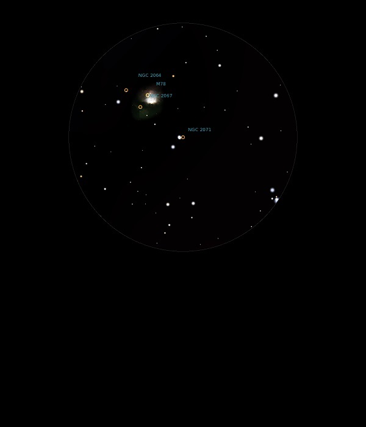

NGC 2071
Bright Nebula in Orion
NGC 2071
Mag 8.0
25/11/13
Just the
merest hint of haze above HIP 27309, a double star
In same
FOV as M78, NGC 2064 and NGC 2067
08/12/15
Fainter nebula but brighter stars than M78, which fits in the
same FOV in 12mm which is otherwise devoid of stars
15/01/16
Centered around V1380 Ori, HIP 27309A and B at Mags 10.2 and
11.1 and stretching down to a Mag 9.9 star, this Nebula seems
to form part of M78, with which it shares a 12mm FOV, and
indeed the whole FOV is hazy
24/02/17
Around
V1380 Ori is the merest hint of the Reflection Nebula which is
NGC 2071 which also touches the Mag 9.9 star which forms the
short side of the triangle (see the observation of M78)
Defiantly one to observe on a crisp night